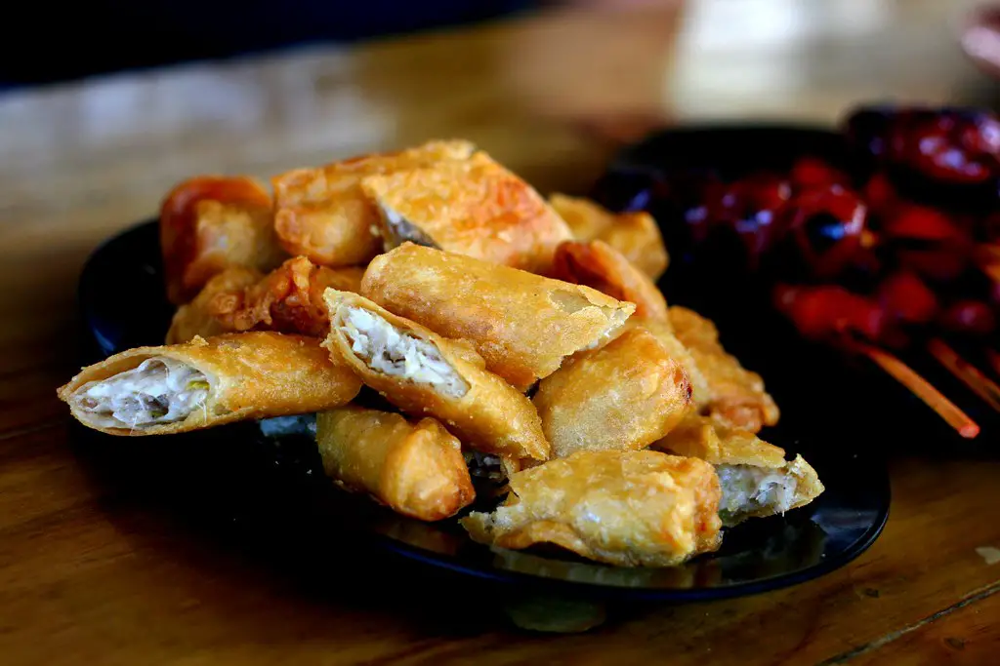

PALAWAN, PHILIPPINES
Nestled in the heart of the Philippines lies Palawan, an enchanting paradise renowned for its breathtaking natural landscapes and pristine beaches. Dubbed as the "Last Frontier" of the country, Palawan boasts unparalleled beauty with its crystal-clear turquoise waters, lush greenery, and towering limestone cliffs. Palawan is home to some of the most captivating destinations in the world, including the UNESCO World Heritage Site of Puerto Princesa Subterranean River National Park, where you can embark on an awe-inspiring journey through an underground river amidst magnificent limestone formations. Discover the captivating charm of El Nido, a tropical paradise dotted with hidden lagoons, secret beaches, and vibrant coral reefs teeming with marine life. Immerse yourself in the tranquility of Coron, where towering karst cliffs rise from the emerald waters, creating a surreal backdrop for diving and snorkeling adventures. Escape to the idyllic islands of Palawan, where you can unwind on pristine white-sand beaches, explore lush jungles, and encounter exotic wildlife.
This folk song from Palawan reflects the cultural richness of the region. The lively rhythms and melodies of "Kingking anay wawa, Tarinting, Layang Pasyak" echo the vibrant spirit of the Palaweños, capturing tales of local life, traditions, and nature's beauty. Passed down through generations, this song serves as a musical tapestry, weaving together stories of the land and its people, celebrating the unique heritage of Palawan.
CEBU, PHILIPPINES
Bantayan Island is a small island off the coast of northern Cebu. Don’t be fooled by this sleepy fishing village, the beaches of this humble island exude the same charm and beauty as the famous Boracay Island.
The best part is, Bantayan Island is not as commercialized and crowded as Boracay. If you want a relaxing vacation by the beach and witness one of the most beautiful sunsets, Bantayan Island won’t disappoint you. Bantayan Island is blessed with several sprawling white-sand beaches and calm azure waters. Most of the beaches in Bantayan Island are within resorts or owned privately, but they are accessible to the public for a small fee. They are some of the best tourist spots on Bantayan Island. Bantayan Island's Kota Beach is one of the best beaches in the Philippines. It features a sandbar and a lagoon that makes a perfect spot for wading in and sunbathing. Paradise Beach, on the other hand, is a serene stretch of white sand beach that features beautiful rock formations.
Bantayan Island also boasts two natural cave pools, the Ogtong Cave and the Sto. Niño Cave. A natural cold spring feeds both caves, so you can expect chilly water that's great for cooling off after a morning of beach-hopping.

"Si Pilemon" is a beloved Cebuano folk song that embodies the heart and soul of Cebu's cultural identity. With its catchy tune and witty lyrics, the song tells the amusing tale of Pilemon and his misadventures, delighting audiences of all ages. Through its playful melody and humorous storytelling, "Si Pilemon" invites listeners to join in the fun and revel in the rich musical heritage of Cebu.
TAGAYTAY, PHILIPPINES
Tagaytay has long been known as a popular holiday destination during the summer months of March to May because of its colder temperature than Metro Manila.
It is why you can see a lot of families packing their picnic boxes and bringing it to public parks in Tagaytay. In this section, you'll be able to learn about the peak season and the annual festival usually held in Tagaytay.
Peak Season
If you plan to have a picnic or do outdoor activities, March to May is ideal as there won't be unexpected rainfalls or thunderstorms. However, take note of the locals here during the after-school season. It gets unexpectedly crowded because this province is known for its relaxing atmosphere and popular tourist spots accessible to anyone from the city.
Tagaytay Art Beat Festival
Often dubbed as the next Malasimbo Music Festival of Puerto Galera, Tagaytay Art Beat is an art and music festival celebrating local musicians and visual artists. The festival usually happens in May. This event is perfect for meeting new people, listening to OPM music, and appreciating Filipino-curated visuals.
The folk music of Tagaytay resonates with the tranquil beauty of its surroundings, capturing the essence of this picturesque destination. The trio of musicians serenading visitors with traditional melodies adds to the charm of Tagaytay, creating an atmosphere of relaxation and serenity. Their music reflects the cultural heritage of the region, inviting listeners to immerse themselves in the timeless rhythms of Tagaytay's musical traditions.
CHOCOLATE HILLS, PHILIPPINES
Located on the island of Bohol in the Philippines, the Chocolate Hills are a slight mystery to locals and visitors alike. Sometimes called the "Eighth Wonder of the World," the Chocolate Hills are the Philippines' third National Geological Monument, established in 1988, and even appear on Bohol's local flag.
The attraction is exactly what it sounds like: rounded hills located at the center of the tiny island that go brown in color during the dry season so they end up looking like giant chocolate truffles.
Geologists categorize the landforms as "conical karst topography." Layman's terms: these hills are leftover limestone deposits from a time when streams and rivers were far above sea level. Rainfall and other natural water sources slowly created the dips and valleys the island has become so famous for.
Broas (ladyfingers) are a popular sweet biscuit among Filipinos. However, not many know that some of the tastiest broas can be found in Baclayon. In a 2016 feature, the Philippine Daily Inquirer mentions that behind the famed Baclayon church is a row of pastry shops selling broas. Unlike the versions found in malls or gift shops, Baclayon broas are “light, sweet, crisp, and melt in the mouth.” Our illustrative photo of neatly fashioned ladyfingers does not do justice to the rougher Baclayon version. Can’t decide on which brand to buy? Osang’s pioneered the selling of broas in the 1800s and is the shop favored by foodies. It’s sold for about 100 PHP for a massive pack of 100 pieces.
The folk songs of Bohol echo the island's natural wonders and cultural diversity, weaving tales of love, longing, and celebration. From lively tunes accompanying festive gatherings to soulful melodies echoing through the lush landscapes, Bohol's folk music captures the essence of island life. Through their songs, Boholanos pay homage to their heritage, preserving the rich musical traditions that define the soul of Bohol.
BICOL, PHILIPPINES
Sain ka na? Welcome to our vibrant corner of Bicol, where the majestic Mayon Volcano proudly stands as the region's iconic landmark, its perfect cone a symbol of nature's awe-inspiring beauty. Nestled within the heart of the Philippines, Bicolandia beckons with its diverse landscapes, from the emerald-green rice terraces of Camarines Sur to the pristine shores of Albay's stunning beaches.
Immerse yourself in the warmth of Bicolano hospitality as you explore our rich culture and traditions, passed down through generations with pride. Indulge your senses in the fiery flavors of our world-renowned cuisine, where the perfect blend of spice and savory delights awaits at every table.
Kinunot is another traditional Bicolano dish made with a combination of stingray or shark meat, coconut milk, malunggay or moringa, onions, garlic, and of course hot chilies.
I can still remember there’s this one joke from a fellow Bicolano that if ever you are swimming in the ocean, do not forget to bring moringa leaves so that if you see a shark, you can just show it the leaves and it will swim away. Lol.
Bicol's folk songs are a reflection of the region's fiery spirit and rich cultural heritage. With their rhythmic beats and soul-stirring melodies, these songs tell stories of resilience, passion, and pride, celebrating the unique identity of the Bicolanos. Whether capturing the beauty of Mayon Volcano or recounting tales of everyday life, Bicol's folk music is a testament to the enduring legacy of the region's traditions.